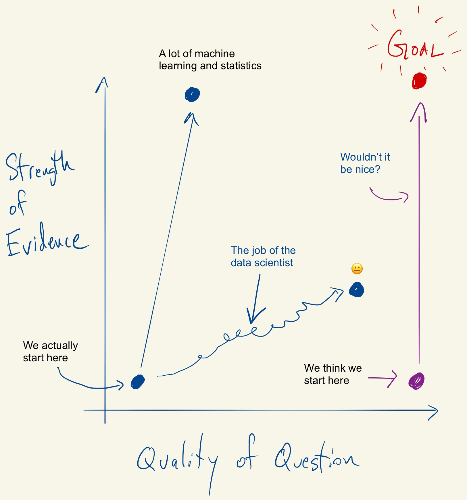

Simply Statistics

Narrative Failure in Data Analysis
A data analysis can fail if it doesn't present a coherent story and "close all the doors". Such a failure is not simply a problem with communication, but often indicates a problem with the details of the analysis itself.

Thinking About Failure in Data Analysis
Streamline - tidy data as a service
The Four Jobs of the Data Scientist
Palantir Shows Its Cards
Asymptotics of Reproducibility
Amplifying people I trust on COVID-19
Is Artificial Intelligence Revolutionizing Environmental Health?
So You Want to Start a Podcast
The data deluge means no reasonable expectation of privacy - now what?

Research quality data and research quality databases
I co-founded a company! Meet Problem Forward Data Science
Generative and Analytical Models for Data Analysis

Tukey, Design Thinking, and Better Questions
Interview with Abhi Datta
10 things R can do that might surprise you
Open letter to journal editors: dynamite plots must die
Interview with Stephanie Hicks
The Tentpoles of Data Science
How Data Scientists Think - A Mini Case Study
The Netflix Data War
The Role of Theory in Data Analysis
The role of academia in data science education
Guest Post: Galin Jones on criteria for promotion and tenture in (bio)statistics departments
The economic consequences of MOOCs
Chromebook Data Science - a free online data science program for anyone with a web browser.
Divergent and Convergent Phases of Data Analysis
Being at the Center
Constructing a Data Analysis
The Law and Order of Data Science
The Trillion Dollar Question
Why I Indent My Code 8 Spaces
Partitioning the Variation in Data
Teaching R to New Users - From tapply to the Tidyverse
What Should be Done When Data Have Creators?
Cultural Differences in Map Data Visualization
Creativity in Data Analysis
The Role of Resources in Data Analysis
People vs. Institutions in Data Analysis
Trustworthy Data Analysis
Context Compatibility in Data Analysis
Awesome postdoc opportunities in computational genomics at JHU
Rethinking Academic Data Sharing
Software as an academic publication
Relationships in Data Analysis
What can we learn from data analysis failures?
Process versus outcome productivity
What is a Successful Data Analysis?
Input on the Draft NIH Strategic Plan for Data Science
What do Fahrenheit, comma separated files, and markdown have in common?
A non-comprehensive list of awesome things other people did in 2017
Thoughts on David Donohos "Fifty Years of Data Science"
How Do Machines Learn?
Puerto Rico's governor wants recount of hurricane death toll
Data Analysis and Engagement - Does Caring About the Analysis Matter?
This is a brave post and everyone in statistics should read it
Some roadblocks to the broad adoption of machine learning and AI
A few things that would reduce stress around reproducibility/replicability in science
Follow Up on Reasoning About Data
Reasoning About Data
How do you convince other people to use R?
It Costs Money to Get It Right
Recording Podcasts with a Remote Co-Host
Editing Podcasts with Logic Pro X
Specialization and Communication in Data Science
Moon Shots Cost More Than You Think
Deep Dive - Y. Ogata's Residual Analysis for Point Processes
Data Science on a Chromebook
Code for my educational gifs
Announcing the tidypvals package
My unfunded HHMI teaching professors proposal
My Podcast Podroll
Optimizing for User Experience
The Machines Learn But We Don't
The future of education is plain text
papr - rate papers on biorxiv in a single swipe and help science!
Toward tidy analysis
The Past and Future of Data Analysis
Will Machine Learning and AI Ever Solve the Last Mile?
Some default and debt restructuring data
Science really is non-partisan: facts and skepticism annoy everybody
La matrcula, el costo del crdito y las huelgas en la UPR
The Importance of Interactive Data Analysis for Data-Driven Discovery
The levels of data science class
When do we need interpretability?
Model building with time series data
Reproducibility and replicability is a glossy science now so watch out for the hype
My Podcasting Setup
Data Scientists Clashing at Hedge Funds
Not So Standard Deviations Episode 32 - You Have to Reinvent the Wheel a Few Times
Reproducible Research Needs Some Limiting Principles
New class - Data App Prototyping for Public Health and Beyond
User Experience and Value in Products
Got a data app idea? Apply to get it prototyped by the JHU DSL!
Interview with Al Sommer - Effort Report Episode 23
Not So Standard Deviations Episode 30 - Philately and Numismatology
Some things I've found help reduce my stress around science
A non-comprehensive list of awesome things other people did in 2016
The four eras of data
Not So Standard Deviations Episode 28 - Writing is a lot Harder than Just Talking
What is going on with math education in the US?
Not So Standard Deviations Episode 27 - Special Guest Amelia McNamara
Help choose the Leek group color palette
Open letter to my lab: I am not "moving to Canada"
Not all forecasters got it wrong: Nate Silver does it again (again)
Data scientist on a chromebook take two
Not So Standard Deviations Episode 25 - How Exactly Do You Pronounce SQL?
Are Datasets the New Server Rooms?
Distributed Masochism as a Pedagogical Model
Not So Standard Deviations Episode 24 - 50 Minutes of Blathering
Should I make a chatbot or a better FAQ?
The Dangers of Weighting Up a Sample
papr - it's like tinder, but for academic preprints
Information and VC Investing
Not So Standard Deviations Episode 23 - Special Guest Walt Hickey
Statistical vitriol
The Mystery of Palantir Continues
Thinking like a statistician: this is not the election for progressives to vote third party
Facebook and left censoring
Mastering Software Development in R
Not So Standard Deviations Episode 22 - Number 1 Side Project
Interview With a Data Sucker
A Short Guide for Students Interested in a Statistics PhD Program
How to create a free distributed data collection "app" with R and Google Sheets
Not So Standard Deviations Episode 21 - This Might be the Future!
Interview with COPSS award winner Nicolai Meinshausen.
A Simple Explanation for the Replication Crisis in Science
A meta list of what to do at JSM 2016
The relativity of raw data
Not So Standard Deviations Episode 18 - Divide by n-1, or n-2, or Whatever
Tuesday update
Not So Standard Deviations Episode 18 - Back on Planet Earth
A Year at Stack Overflow
Tuesday Update
Ultimate AI battle - Apple vs. Google
Good list of good books
Not So Standard Deviations Episode 17 - Diurnal High Variance
Defining success - Four secrets of a successful data science experiment
Sometimes the biggest challenge is applying what we already know
Sometimes there's friction for a reason
Not So Standard Deviations Episode 16 - The Silicon Valley Episode
Update on Theranos
What is software engineering for data science?
Disseminating reproducible research is fundamentally a language and communication problem
The Real Lesson for Data Science That is Demonstrated by Palantir's Struggles
A means not an end - building a social media presence as a junior scientist
Time Series Analysis in Biomedical Science - What You Really Need to Know
Not So Standard Deviations Episode 15 - Spinning Up Logistics
High school student builds interactive R class for the intimidated with the JHU DSL
An update on Georgia Tech's MOOC-based CS degree
Write papers like a modern scientist (use Overleaf or Google Docs + Paperpile)
As a data analyst the best data repositories are the ones with the least features
Junior scientists - you don't have to publish in open access journals to be an open scientist.
A Natural Curiosity of How Things Work, Even If You're Not Responsible For Them
Not So Standard Deviations Episode 13 - It's Good that Someone is Thinking About Us
Companies are Countries, Academia is Europe
New Feather Format for Data Frames
How to create an AI startup - convince some humans to be your training set
Not So Standard Deviations Episode 12 - The New Bayesian vs. Frequentist
The future of biostatistics
The Evolution of a Data Scientist
Not So Standard Deviations Episode 11 - Start and Stop
Not So Standard Deviations Episode 10 - It's All Counterexamples
Preprints are great, but post publication peer review isn't ready for prime time
Spreadsheets: The Original Analytics Dashboard
Non-tidy data
When it comes to science - its the economy stupid.
Not So Standard Deviations Episode 9 - Spreadsheet Drama
Why I don't use ggplot2
Data handcuffs
Leek group guide to reading scientific papers
A menagerie of messed up data analyses and how to avoid them
Exactly how risky is breathing?
On research parasites and internet mobs - let's try to solve the real problem.
Not So Standard Deviations Episode 8 - Snow Day
Parallel BLAS in R
Profile of Hilary Parker
Not So Standard Deviations Episode 7 - Statistical Royalty
Jeff, Roger and Brian Caffo are doing a Reddit AMA at 3pm EST Today
A non-comprehensive list of awesome things other people did in 2015
Not So Standard Deviations: Episode 6 - Google is the New Fisher
Instead of research on reproducibility, just do reproducible research
By opposing tracking well-meaning educators are hurting disadvantaged kids
Not So Standard Deviations: Episode 5 - IRL Roger is Totally With It
Thinking like a statistician: the importance of investigator-initiated grants
A thanksgiving dplyr Rubik's cube puzzle for you
20 years of Data Science: from Music to Genomics
Some Links Related to Randomized Controlled Trials for Policymaking
Given the history of medicine, why are randomized trials not used for social policy?
So you are getting crushed on the internet? The new normal for academics.
Prediction Markets for Science: What Problem Do They Solve?
Biostatistics: It's not what you think it is
Not So Standard Deviations: Episode 4 - A Gajillion Time Series
How I decide when to trust an R package
Faculty/postdoc job opportunities in genomics across Johns Hopkins
The Statistics Identity Crisis: Am I a Data Scientist
The statistics identity crisis: am I really a data scientist?
Discussion of the Theranos Controversy with Elizabeth Matsui
Not So Standard Deviations: Episode 3 - Gilmore Girls
We need a statistically rigorous and scientifically meaningful definition of replication
Theranos runs head first into the realities of diagnostic testing
Minimal R Package Check List
Profile of Data Scientist Shannon Cebron
Not So Standard Deviations: Episode 2 - We Got it Under 40 Minutes
A glass half full interpretation of the replicability of psychological science
Apple Music's Moment of Truth
We Used Data to Improve our HarvardX Courses: New Versions Start Oct 15
Data Analysis for the Life Sciences - a book completely written in R markdown
The Leek group guide to writing your first paper
Not So Standard Deviations: The Podcast
Interview with COPSS award Winner John Storey
The Next National Library of Medicine Director Can Help Define the Future of Data Science
Interview with Sherri Rose and Laura Hatfield
If you ask different questions you get different answers - one more way science isn't broken it is just really hard
P > 0.05? I can make any p-value statistically significant with adaptive FDR procedures

Correlation is not a measure of reproducibility
UCLA Statistics 2015 Commencement Address
rafalib package now on CRAN
Interested in analyzing images of brains? Get started with open access data.
Statistical Theory is our "Write Once, Run Anywhere"
Autonomous killing machines won't look like the Terminator...and that is why they are so scary
Announcing the JHU Data Science Hackathon 2015
stringsAsFactors: An unauthorized biography
The statistics department Moneyball opportunity
The Mozilla Fellowship for Science
JHU, UMD researchers are getting a really big Big Data center
The Massive Future of Statistics Education
Looks like this R thing might be for real
How Airbnb built a data science team
How public relations and the media are distorting science
Interview at Leanpub
Johns Hopkins Data Science Specialization Captsone 2 Top Performers
Batch effects are everywhere! Deflategate edition
I'm a data scientist - mind if I do surgery on your heart?
Interview with Class Central
Interview with Chris Wiggins, chief data scientist at the New York Times
Science is a calling and a career, here is a career planning guide for students and postdocs
Is it species or is it batch? They are confounded, so we can't know
Residual expertise - or why scientists are amateurs at most of science
The tyranny of the idea in science
Mendelian randomization inspires a randomized trial design for multiple drugs simultaneously
Rafa's citations above replacement in statistics journals is crazy high.
Figuring Out Learning Objectives the Hard Way
Data analysis subcultures
Genomics Case Studies Online Courses Start in Two Weeks (4/27)
Why is there so much university administration? We kind of asked for it.
A blessing of dimensionality often observed in high-dimensional data sets
How to Get Ahead in Academia
Why You Need to Study Statistics
Teaser trailer for the Genomic Data Science Specialization on Coursera
Introduction to Bioconductor HarvardX MOOC starts this Monday March 30
A surprisingly tricky issue when using genomic signatures for personalized medicine
A simple (and fair) way all statistics journals could drive up their impact factor.
Data science done well looks easy - and that is a big problem for data scientists
De-weaponizing reproducibility
The elements of data analytic style - so much for a soft launch
Advanced Statistics for the Life Sciences MOOC Launches Today
Navigating Big Data Careers with a Statistics PhD
Introduction to Linear Models and Matrix Algebra MOOC starts this Monday Feb 16
Is Reproducibility as Effective as Disclosure? Let's Hope Not.
The trouble with evaluating anything
Early data on knowledge units - atoms of statistical education
Johns Hopkins Data Science Specialization Top Performers
Knowledge units - the atoms of statistical education
Precision medicine may never be very precise - but it may be good for public health
Reproducible Research Course Companion
Data as an antidote to aggressive overconfidence
Gorging ourselves on "free" health care: Harvard's dilemma
If you were going to write a paper about the false discovery rate you should have done it in 2002
How to find the science paper behind a headline when the link is missing
Statistics and R for the Life Sciences: New HarvardX course starts January 19
Beast mode parenting as shown by my Fitbit data
Sunday data/statistics link roundup (1/4/15)
Ugh ... so close to one million page views for 2014
On how meetings and conference calls are disruptive to a data scientist
Sunday data/statistics link roundup (12/21/14)
Interview with Emily Oster
Repost: Statistical illiteracy may lead to parents panicking about Autism
A non-comprehensive list of awesome things other people did in 2014
Sunday data/statistics link roundup (12/14/14)
Kobe, data says stop blaming your teammates
Genticamente, no hay tal cosa como la raza puertorriquea
Sunday data/statistics link roundup (12/7/14)
Interview with Cole Trapnell of UW Genome Sciences
Repost: A deterministic statistical machine
Thinking Like a Statistician: Social Media and the Spiral of Silence
HarvardX Biomedical Data Science Open Online Training Curriculum launches on January 19
Data Science Students Predict the Midterm Election Results
Sunday data/statistics link roundup (11/9/14)
Time varying causality in n=1 experiments with applications to newborn care
538 election forecasts made simple
Sunday data/statistics link roundup (11/2/14)
Why I support statisticians and their resistance to hype
Return of the sunday links! (10/26/14)
An interactive visualization to teach about the curse of dimensionality
Vote on simply statistics new logo design
Thinking like a statistician: don't judge a society by its internet comments
Bayes Rule in an animated gif
Creating the field of evidence based data analysis - do people know what a p-value looks like?
Dear Laboratory Scientists: Welcome to My World

I declare the Bayesian vs. Frequentist debate over for data scientists
Data science can't be point and click
The Leek group guide to genomics papers
An economic model for peer review
The Drake index for academics
You think P-values are bad? I say show me the data.
Unbundling the educational package
Applied Statisticians: people want to learn what we do. Let's teach them.
A non-comprehensive list of awesome female data people on Twitter
Why the three biggest positive contributions to reproducible research are the iPython Notebook, knitr, and Galaxy
A (very) brief review of published human subjects research conducted with social media companies
SwiftKey and Johns Hopkins partner for Data Science Specialization Capstone
Interview with COPSS Award winner Martin Wainwright
Crowdsourcing resources for the Johns Hopkins Data Science Specialization
swirl and the little data scientist's predicament
The Leek group guide to giving talks
Stop saying "Scientists discover..." instead say, "Prof. Doe's team discovers..."
It's like Tinder, but for peer review.
If you like A/B testing here are some other Biostatistics ideas you may like
Do we need institutional review boards for human subjects research conducted by big web companies?
Introducing people to R: 14 years and counting
Academic statisticians: there is no shame in developing statistical solutions that solve just one problem
Jan de Leeuw owns the Internet
Piketty in R markdown - we need some help from the crowd
Privacy as a function of sample size
New book on implementing reproducible research
The difference between data hype and data hope
Heads up if you are going to submit to the Journal of the National Cancer Institute
The future of academic publishing is here, it just isn't evenly distributed
What I do when I get a new data set as told through tweets
The Real Reason Reproducible Research is Important
Post-Piketty Lessons
The Big in Big Data relates to importance not size
10 things statistics taught us about big data analysis
Why big data is in trouble: they forgot about applied statistics
JHU Data Science: More is More
Confession: I sometimes enjoy reading the fake journal/conference spam
Picking a (bio)statistics thesis topic for real world impact and transferable skills
Correlation does not imply causation (parental involvement edition)
The #rOpenSci hackathon #ropenhack
Writing good software can have more impact than publishing in high impact journals for genomic statisticians
This is how an important scientific debate is being used to stop EPA regulation
Data Analysis for Genomics edX Course
A non-comprehensive comparison of prominent data science programs on cost and frequency.
The fact that data analysts base their conclusions on data does not mean they ignore experts
The 80/20 rule of statistical methods development
The time traveler's challenge.
ENAR is in Baltimore - Here's What To Do
How to use Bioconductor to find empirical evidence in support of being a normal number
Oh no, the Leekasso....
Per capita GDP versus years since women received right to vote
PLoS One, I have an idea for what to do with all your profits: buy hard drives
Data Science is Hard, But So is Talking
Here's why the scientific publishing system can never be "fixed"
Why do we love R so much?
k-means clustering in a GIF
Repost: Ronald Fisher is one of the few scientists with a legit claim to most influential scientist ever
On the scalability of statistical procedures: why the p-value bashers just don't get it.
loess explained in a GIF
Monday data/statistics link roundup (2/10/14)
Just a thought on peer reviewing - I can't help myself.
My Online Course Development Workflow
The three tables for genomics collaborations
Not teaching computing and statistics in our public schools will make upward mobility even harder
Marie Curie says stop hating on quilt plots already.
Announcing the Release of swirl 2.0
The Johns Hopkins Data Science Specialization on Coursera
Sunday data/statistics link roundup (1/19/2014)
Missing not at random data makes some Facebook users feel sad
edge.org asks famous scientists what scientific concept to throw out & they say statistics
Sunday data/statistics link roundup (1/12/2014)
The top 10 predictor takes on the debiased Lasso - still the champ!
Preparing for tenure track job interviews
Sunday data/statistics link roundup (1/5/14)
Repost: Prediction: the Lasso vs. just using the top 10 predictors
The Supreme Court takes on Pollution Source Apportionment...and Realizes It's Hard
Some things R can do you might not be aware of
A non-comprehensive list of awesome things other people did this year.
A summary of the evidence that most published research is false
Sunday data/statistics link roundup (12/15/13)
Simply Statistics Interview with Michael Eisen, Co-Founder of the Public Library of Science (Part 2/2)
Simply Statistics Interview with Michael Eisen, Co-Founder of the Public Library of Science (Part 1/2)
The key word in "Data Science" is not Data, it is Science
Are MOOC's fundamentally flawed? Or is it a problem with statistical literacy?
NYC crime rates by year/commissioner
Advice for students on the academic job market
On the future of the textbook
Academics should not feel guilty for maximizing their potential by leaving their homeland
Sunday data/statistics link roundup (12/2/13)
Statistical zealots
Simply Statistics interview with Daphne Koller, Co-Founder of Coursera
Future of Statistics take home messages. #futureofstats
You must be at least 20 years old for this job
Feeling optimistic after the Future of the Statistical Sciences Workshop
What should statistics do about massive open online courses?
What's the future of inference?
The Leek group guide to sharing data with a data analyst to speed collaboration
Original source code for Apple II DOS
Future of Statistical Sciences Workshop is happening right now #FSSW2013
Survival analysis for hard drives
Apple's Touch ID and a worldwide lesson in sensitivity and specificity
Out with Big Data, in with Hyperdata
How to Host a Conference on Google Hangouts on Air
Sunday data/statistics link roundup (11/3/13)
Unconference on the Future of Statistics (Live Stream) #futureofstats
How to participate in #futureofstats Unconference
Tukey Talks Turkey #futureofstats
Simply Statistics Future of Statistics Speakers - Two Truths, One Lie #futureofstats
Sunday data/statistics link roundup (10/27/13)
(Back to) The Future of Statistical Software #futureofstats
The Leek group guide to reviewing scientific papers
Blog posts that impact real science - software review and GTEX
PubMed commons is launching
Why are the best relievers not used when they are most needed?
Platforms and Integration in Statistical Research (Part 2/2)
The @fivethirtyeight effect - watching @walthickey gain Twitter followers in real time
Platforms and Integration in Statistical Research (Part 1/2)
Teaching least squares to a 5th grader by calibrating a programmable robot
A general audience friendly explanation for why Lars Peter Hansen won the Nobel Prize
Sunday data/statistics link roundup (10/13/13)
Why do we still teach a semester of trigonometry? How about engineering instead?
Cancelled NIH study sections: a subtle, yet disastrous, effect of the government shutdown
The Care and Feeding of Your Scientist Collaborator
The Care and Feeding of the Biostatistician
The Leek group policy for developing sustainable R packages
Sunday data/statistics link roundup (10/6/2013)
Repost: Finding good collaborators
Statistical Ode to Mariano Rivera
Sunday data/statistics link roundup (9/29/13)
Announcing Statistics with Interactive R Learning Software Environment
How could code review discourage code disclosure? Reviewers with motivation.
Is most science false? The titans weigh in.
How I view an academic talk: like a sports game
The limiting reagent for big data is often small, well-curated data
Announcing the Simply Statistics Unconference on the Future of Statistics #futureofstats
Data Analysis in the top 9 courses in lifetime enrollment at Coursera!
So you're moving to Baltimore
Help needed for establishing an ASA statistical genetics and genomics section
Implementing Evidence-based Data Analysis: Treading a New Path for Reproducible Research (Part 3)
Repost: A proposal for a really fast statistics journal
Sunday data/statistics link roundup (9/1/13)
AAAS S&T Fellows for Big Data and Analytics
The return of the stat - Computing for Data Analysis & Data Analysis back on Coursera!
Evidence-based Data Analysis: Treading a New Path for Reproducible Research (Part 2)
Interview with Ani Eloyan and Betsy Ogburn
Statistics meme: Sad p-value bear
Did Faulty Software Shut Down the NASDAQ?
If you are near DC/Baltimore, come see Jeff talk about Coursera
Stratifying PISA scores by poverty rates suggests imitating Finland is not necessarily the way to go for US schools
Chris Lane, U.S. tourism boycotts, and large relative risks on small probabilities
Treading a New Path for Reproducible Research: Part 1
A couple of requests for the @Statistics2013 future of statistics workshop
WANTED: Neuro-quants
Embarrassing typos reveal the dangers of the lonely data analyst
Data scientist is just a sexed up word for statistician
Simply Statistics #JSM2013 Picks for Wednesday
Simply Statistics #JSM2013 Picks for Tuesday
Simply Statistics #JSM2013 Picks for Monday
Sunday data/statistics link roundup (8/4/13)
That causal inference came out of nowhere
The ROC curves of science
The researcher degrees of freedom - recipe tradeoff in data analysis
Sunday data/statistics link roundup (7/28/13)
Statistics takes center stage in the Independent
What are the 5 most influential statistics papers of 2000-2010?
Sunday data/statistics link roundup (7/21/2013)
Defending clinical trials
The "failure" of MOOCs and the ecological fallacy
Name 5 statisticians, now name 5 young statisticians
Yes, Clinical Trials Work
Sunday data/statistics link roundup (7/14/2013)
What are the iconic data graphs of the past 10 years?
Repost: Preventing Errors Through Reproducibility
Use R! 2014 to be at UCLA
Fourth of July data/statistics link roundup (7/4/2013)
Repost: The 5 Most Critical Statistical Concepts
Measuring the importance of data privacy: embarrassment and cost
What is the Best Way to Analyze Data?
Art from Data
Doing Statistical Research
Does fraud depend on my philosophy?
Sunday data/statistics link roundup (6/23/13)
Interview with Miriah Meyer - Microsoft Faculty Fellow and Visualization Expert
Google's brainteasers (that don't work) and Johns Hopkins Biostatistics Data Analysis
Sunday data/statistics link roundup (6/16/13 - Father's day edition!)
The vast majority of statistical analysis is not performed by statisticians
False discovery rate regression (cc NSA's PRISM)
Personalized medicine is primarily a population-health intervention
Why not have a "future of the field" session at a conference with only young speakers?
Sunday data/statistics link roundup (6/2/13)
What statistics should do about big data: problem forward not solution backward
Sunday data/statistics link roundup (5/19/2013)
When does replication reveal fraud?
The bright future of applied statistics
Sunday data/statistics link roundup (5/12/2013, Mother's Day!)
A Shiny web app to find out how much medical procedures cost in your state.
Talking about MOOCs on MPT Direct Connection
Why the current over-pessimism about science is the perfect confirmation bias vehicle and we should proceed rationally
Reproducibility at Nature
Reproducibility and reciprocity
Sunday data/statistics link roundup (4/28/2013)
Mindlessly normalizing genomics data is bad - but ignoring unwanted variability can be worse
Interview at Yale Center for Environmental Law & Policy
Nevins-Potti, Reinhart-Rogoff
Podcast #7: Reinhart, Rogoff, Reproducibility
I wish economists made better plots
Data science only poses a threat to (bio)statistics if we don't adapt
Sunday data/statistics link roundup (4/14/2013)
Great scientist - statistics = lots of failed experiments
Climate Science Day on Capitol Hill
NIH is looking for an Associate Director for Data Science: Statisticians should consider applying
Introducing the healthvis R package - one line D3 graphics with R
An instructor's thoughts on peer-review for data analysis in Coursera
Podcast #6: Data Analysis MOOC Post-mortem
Sunday data/statistics link roundup (3/24/2013)
Youtube should check its checksums
Call for papers for a special issue of Statistical Analysis and Data Mining
Sunday data/statistics link roundup (3/17/13)
Postdoctoral fellow position in reproducible research
Here's my #ENAR2013 Wednesday schedule
If I were at #ENAR2013 today, here's where I'd go
Sunday data/statistics link roundup (3/10/13)
Send me student/postdoc blogs in statistics and computational biology
The importance of simulating the extremes
Big Data - Context = Bad
Sunday data/statistics link roundup (3/3/2013)
Please save the unsolicited R01s
Big data: Giving people what they want
Sunday data/statistics link roundup (2/24/2013)
Tesla vs. NYT: Do the Data Really Tell All?
Sunday data/statistics link roundup (2/17/2013)
Interview with Nick Chamandy, statistician at Google
I'm a young scientist and sequestration will hurt me
Sunday data/statistics link roundup (2/10/2013)
Issues with reproducibility at scale on Coursera
Sunday data/statistics link roundup (2/3/2013)
paste0 is statistical computing's most influential contribution of the 21st century
Data supports claim that if Kobe stops ball hogging the Lakers will win more
Sunday data/statistics link roundup (1/27/2013)
My advanced methods class is now being live-tweeted
Why I disagree with Andrew Gelman's critique of my paper about the rate of false discoveries in the medical literature
Statisticians and computer scientists - if there is no code, there is no paper
Sunday data/statistics link roundup (1/20/2013)
Comparing online and in-class outcomes
R package meme
Review of R Graphics Cookbook by Winston Chang
Welcome to the Smog-ocalypse
Sunday data/statistics link roundup (1/13/2013)
NSF should understand that Statistics is not Mathematics
The landscape of data analysis
By introducing competition open online education will improve teaching at top universities
Sunday data/statistics link roundup (1/6/2013)
Does NIH fund innovative work? Does Nature care about publishing accurate articles?
The scientific reasons it is not helpful to study the Newtown shooter's DNA
Fitbit, why can't I have my data?
Happy 2013: The International Year of Statistics
What makes a good data scientist?
Sunday data/statistics link roundup (12/30/12)
Make a Christmas Tree in R with random ornaments/presents
Sunday data/statistics link roundup 12/23/12
The NIH peer review system is still the best at identifying innovative biomedical investigators
Rafa interviewed about statistical genomics
The value of re-analysis
Should the Cox Proportional Hazards model get the Nobel Prize in Medicine?
Sunday data/statistics link roundup (12/16/12)
Computing for Data Analysis Returns
Joe Blitzstein's free online stat course helps put a critical satellite in orbit
Sunday data/statistics link roundup (12/9/12)
Dropping the Stick in Data Analysis
Email is a to-do list made by other people - can someone make it more efficient?!
Advice for students on the academic job market (2013 edition)
Data analysis acquisition "worst deal ever"?
Sunday data/statistics link roundup (12/2/12)
Statistical illiteracy may lead to parents panicking about Autism.
The statisticians at Fox News use classic and novel graphical techniques to lead with data
Sunday data/statistics link roundup (11/25/2012)
Computer scientists discover statistics and find it useful
Developing the New York Times Visual Election Outcome Explorer
A grand experiment in science funding
Podcast #5: Coursera Debrief
Sunday Data/Statistics Link Roundup (11/18/12)
Welcome to Simply Statistics 2.0
Logo Contest Winner
Reproducible Research: With Us or Against Us?
Interview with Tom Louis - New Chief Scientist at the Census Bureau
Some academic thoughts on the poll aggregators
Nate Silver does it again! Will pundits finally accept defeat?
If we truly want to foster collaboration, we need to rethink the "independence" criteria during promotion
Elite education for the masses
Sunday Data/Statistics Link Roundup (11/4/12)
The Year of the MOOC
Microsoft Seeks an Edge in Analyzing Big Data
On weather forecasts, Nate Silver, and the politicization of statistical illiteracy
Computing for Data Analysis (Simply Statistics Edition)
Sunday Data/Statistics Link Roundup (10/28/12)
I love those first discussions about a new research project
Let's make the Joint Statistical Mettings modular
A statistical project bleg (urgent-ish)
Sunday Data/Statistics Link Roundup (10/21/12)
Free Online Education Is Now Illegal in Minnesota
Minnesota clarifies: Free online ed is OK
Simply Statistics Podcast #4: Interview with Rebecca Nugent
Statistics isn't math but statistics can produce math
Making Coffee With R
Comparing Hospitals
A statistician loves the #insurancepoll...now how do we analyze it?
Sunday Data/Statistics Link Roundup (10/14/12)
What's wrong with the predicting h-index paper.
Why we should continue publishing peer-reviewed papers
Fraud in the Scientific Literature
Sunday Data/Statistics Link Roundup (10/7/12)
Not just one statistics interview...John McGready is the Jon Stewart of statistics
Should we stop publishing peer-reviewed papers?
Statistics project ideas for students (part 2)
2-D author lists
This is an awesome paper all students in statistics should read
The more statistics blogs the better
John McGready interviews Jeff Leek
John McGready interviews Roger Peng
Simply statistics logo contest
NBC Unpacks Trove of Data From Olympics
Pro-tips for graduate students (Part 3)
Computing for Data Analysis starts today!
Sunday Data/Statistics Link Roundup (9/23/12)
Prediction contest
Every professor is a startup
In data science - it's the problem, stupid!
Chinese Company to Acquire DNA Sequencing Firm
Online Mentors to Guide Women Into the Sciences
Sunday Data/Statistics Link Roundup (9/16/12)
Statistical analysis suggests the Washington Nationals were wrong to shut down Stephen Strasburg
The statistical method made me lie
An experimental foundation for statistics
Coursera introduces three courses in statistics

The pebbles of academia
Sunday Data/Statistics Link Roundup (9/9/12)
Big Data in Your Blood
The Weatherman Is Not a Moron
Simply Statistics Podcast #3: Interview with Steven Salzberg
Top-down versus bottom-up science: data analysis edition
Simply Statistics Podcast #2
How long should the next podcast be?
Online universities blossom in Asia
Sunday Data/Statistics Link Roundup (9/2/2012)
Drought Extends, Crops Wither
Court Blocks E.P.A. Rule on Cross-State Pollution
Most Americans Confused By Cloud Computing According to National Survey
Court Upholds Rule on Nitrogen Dioxide Emissions
Green: Will Emissions Disclosure Mean Investor Pressure on Polluters?
I.B.M. Mainframe Evolves to Serve the Digital World
Increasing the cost of data analysis
Active in Cloud, Amazon Reshapes Computing
Genes Now Tell Doctors Secrets They Cant Utter
A deterministic statistical machine
Sunday data/statistics link roundup (8/26/12)
Judge Rules Poker Is A Game Of Skill, Not Luck
Simply Statistics Podcast #1
Science Exchange starts Reproducibility Initiative
Data Startups from Y Combinator Demo Day
Harvard chooses statistician to lead Graduate School of Arts and Sciences
NSF recognizes math and statistics are not the same thing...kind of
Recommended updates from Google Scholar
Interview with C. Titus Brown - Computational biologist and open access champion
Statistics/statisticians need better marketing
Big-Data Investing Gets Its Own Supergroup
Johns Hopkins University Professor Louis Named to Lead Census Bureau Research Directorate
How Big Data Became So Big
Sunday data/statistics link roundup (8/12/12)
When dealing with poop, it's best to just get your hands dirty
Why we are teaching massive open online courses (MOOCs) in R/statistics for Coursera
A non-exhaustive list of things I have failed to accomplish
On the relative importance of mathematical abstraction in graduate statistical education
My worst nightmare...
In which Brian debates abstraction with T-Bone
Samuel Kou wins COPSS Award
If I were at #JSM2012 today, here's where I'd go.
NYC and Columbia to Create Institute for Data Sciences & Engineering
Why I'm Staying in Academia
In Sliding Internet Stocks, Some Hear Echo of 2000
Statistician (@cocteau) to show journalists how it's done
Predictive analytics might not have predicted the Aurora shooter
Tweet up #JSM2012
When Picking a C.E.O. Is More Random Than Wise
Congress to Examine Data Sellers
How important is abstract thinking for graduate students in statistics?
Online education: many academics are missing the point
Smartphones, Big Data Help Fix Boston's Potholes
Voters Say They Are Wary of Ads Made Just for Them
Buy your own analytics startup for $15,000 (at least as of now)
Really Big Objects Coming to R
A Contest for Sequencing Genomes Has Its First Entry in Ion Torrent
I.B.M. Is No Longer a Tech Bellwether (It's too busy doing statistics)
Proof by example and letters of recommendation
Facebook's Real Big Data Problem
Medalball: Moneyball for the olympics
We used, you know, that statistics thingy
Sunday Data/Statistics Link Roundup (7/22/12)
Big Data on Campus
Risks in Big Data Attract Big Law Firms
Interview with Lauren Talbot - Quantitative analyst for the NYC Financial Crime Task Force
Big data is worth nothing without big science
Help me find the good JSM talks
A closer look at data suggests Johns Hopkins is still the #1 US hospital
Johns Hopkins Coursera Statistics Courses
Top Universities Test the Online Appeal of Free
Free Statistics Courses on Coursera
Universities Reshaping Education on the Web
Bits: Betaworks Buys What's Left of Social News Site Digg
Sunday Data/Statistics Link Roundup (7/15/12)
Bits: Mobile App Developers Scoop Up Vast Amounts of Data, Reports Say
GDP Figures in China are for "reference" only
This is Not About Statistics But It is About Emacs
Statistical Reasoning on iTunes U
What is the most important code you write?
How Does the Film Industry Actually Make Money?
My worst (recent) experience with peer review
A Northwest Pipeline to Silicon Valley
Skepticism+Ideas+Grit
The power of power
Replication and validation in -omics studies - just as important as reproducibility
Computing and Sustainability: What Can Be Done?
Meet the Skeptics: Why Some Doubt Biomedical Models - and What it Takes to Win Them Over
Sunday data/statistics link roundup (7/1)
Obamacare is not going to solve the health care crisis, but a new initiative, led by a statistician, may help
Motivating statistical projects
Follow up on "Statistics and the Science Club"
The price of skepticism
Hilary Mason: From Tiny Links, Big Insights
The problem with small big data
A specific suggestion to help recruit/retain women faculty at Hopkins
The Evolution of Music
Sunday data/statistics link roundup (6/24)
Statistics and the Science Club
Pro Tips for Grad Students in Statistics/Biostatistics (Part 2)
E.P.A. Casts New Soot Standard as Easily Met
Pro Tips for Grad Students in Statistics/Biostatistics (Part 1)
Sunday data/statistics link roundup (6/17)
Statisticians, ASA, and Big Data
Big Data Needs May Create Thousands Of Tech Jobs
Green: E.P.A. Soot Rules Expected This Week
Poison gas or...air pollution?
Chris Volinsky knows where you are
Getting a grant...or a startup
Sunday data/statistics link roundup (6/10)
China Asks Embassies to Stop Measuring Air Pollution
How Big Data Gets Real
Interview with Amanda Cox - Graphics Editor at the New York Times
Writing software for someone else
Why "no one reads the statistics literature anymore"
View my Statistics for Genomics lectures on Youtube and ask questions on facebook/twitter
Schlep blindness in statistics
Sunday data/statistics link roundup (5/27)
"How do we evaluate statisticians working in genomics? Why don't they publish in stats journals?" Here is my answer
Sunday data/statistics link roundup (5/20)
Health by numbers: A statistician's challenge
The Numbers Don't Lie
Computational biologist blogger saves computer science department
Facebook Needs to Turn Data Into Investor Gold
Sunday data/statistics link roundup (5/13)
Interview with Hadley Wickham - Developer of ggplot2
What are the products of data analysis?
DealBook: Glaxo to Make Hostile Bid for Human Genome Sciences
Data analysis competition combines statistics with speed
How do you know if someone is great at data analysis?
Illumina stays independent, for now
UCLA Data Fest 2012
Untitled
New National Academy of Sciences Members
GE's Billion-Dollar Bet on Big Data
Just like regular communism, dongle communism has failed
Sample mix-ups in datasets from large studies are more common than you think
A disappointing response from @NatureMagazine about folks with statistical skills
Sunday data/statistics link roundup (4/29)
People in positions of power that don't understand statistics are a big problem for genomics
Nature is hiring a data editor...how will they make sense of the data?
How do I know if my figure is too complicated?
On the future of personalized medicine
Sunday data/statistics link roundup (4/22)
Replication, psychology, and big science
Roche: Illumina Is No Apple
Sunday data/statistics link roundup (4/15)
Interview with Drew Conway - Author of "Machine Learning for Hackers"
The Problem with Universities
Statistics is not math...
Evolution, Evolved
Sunday data/statistics link roundup (4/8)
What is a major revision?
Study Says DNAs Power to Predict Illness Is Limited
Epigenetics: Marked for success
ENAR Meeting
New U.S. Research Will Aim at Flood of Digital Data
R 2.15.0 is released
Big Data Meeting at AAAS
Roche Raises Illumina Bid to $51, Seeking Faster Deal
Justices Send Back Gene Case
R and the little data scientist's predicament
Supreme court vacates ruling on BRCA gene patent!
Some thoughts from Keith Baggerly on the recently released IOM report on translational omics
Sunday data/statistics link roundup (3/25)
This graph shows that President Obama's proposed budget treats the NIH even worse than G.W. Bush - Sign the petition to increase NIH funding!
Big Data for the Rest of Us, in One Start-Up
More commentary on Mayo v. Prometheus
Laws of Nature and the Law of Patents: Supreme Court Rejects Patents for Correlations
Supreme court unanimously rules against personalized medicine patent!
Interview with Amy Heineike - Director of Mathematics at Quid
Sunday data/statistics link roundup (3/18)
Peter Norvig on the "Unreasonable Effectiveness of Data"
A proposal for a really fast statistics journal
Frighteningly Ambitious Startup Ideas
Answers in Medicine Sometimes Lie in Luck
Sunday Data/Statistics Link Roundup (3/11)
Cost of Gene Sequencing Falls, Raising Hopes for Medical Advances
IBMs Watson Gets Wall Street Job After Jeopardy Win
Mission Control, Built for Cities
A plot of my citations in Google Scholar vs. Web of Science
R.A. Fisher is the most influential scientist ever
Are banks being sidelined by retailers' data collection?
Characteristics of my favorite statistics talks
DealBook: Roche Extends Deadline for Illumina Offer
Sunday data/statistics link roundup (3/4)
True Innovation
An essay on why programmers need to learn statistics
Confronting a Law Of Limits
A cool profile of a human rights statistician
Gulf on Open Access to Federally Financed Research
Statistics project ideas for students
The case for open computer programs
Duke Taking New Steps to Safeguard Research Integrity
Graham & Dodd's Security Analysis: Moneyball for...Money
The Duke Saga Starter Set
'WaterBillWoman' pestered city for years over faulty bills
Monitoring Your Health With Mobile Devices
Prediction: the Lasso vs. just using the top 10 predictors
Air Pollution Linked to Heart and Brain Risks
Professional statisticians agree: the knicks should start Steve Novak over Carmelo Anthony
Interracial Couples Who Make the Most Money
Scientists Find New Dangers in Tiny but Pervasive Particles in Air Pollution
60 Lives, 30 Kidneys, All Linked
Company Unveils DNA Sequencing Device Meant to Be Portable, Disposable and Cheap
I don't think it means what ESPN thinks it means
How Companies Learn Your Secrets
I.B.M.: Big Data, Bigger Patterns
A Flat Budget for NIH in 2013 - ScienceInsider
Harvard's Stat 110 is now a course on iTunes
Mathematicians Organize Boycott of a Publisher
Mortimer Spiegelman Award: Call for Nominations. Deadline is April 1, 2012
At MSNBC, a Professor as TV Host
Untitled
The Duke Clinical Trials Saga - What Really Happened
Sunday Data/Statistics Link Roundup (2/12)
The Age of Big Data
Data says Jeremy Lin is for real
Peter Thiel on Peer Review/Science
Duke Saga on 60 Minutes this Sunday
An example of how sending a paper to a statistics journal can get you scooped
DealBook: Illumina Formally Rejects Roche's Takeover Bid
Statisticians and Clinicians: Collaborations Based on Mutual Respect
Wolfram, a Search Engine, Finds Answers Within Itself
An R script for estimating future inflation via the Treasury market
Sunday Data/Statistics Link Roundup (2/5)
Why don't we hear more about Adrian Dantley on ESPN? This graph makes me think he was as good an offensive player as Michael Jordan.
Cleveland's (?) 2001 plan for redefining statistics as "data science"
Evidence-based Music
This graph makes me think Kobe is not that good, he just shoots a lot
Why in-person education isn't dead yet...but a statistician could finish it off
Sunday data/statistics link roundup (1/29)
This simple bar graph clearly demonstrates that the US can easily increase research funding
When should statistics papers be published in Science and Nature?
A wordcloud comparison of the 2011 and 2012 #SOTU
The end of in-class lectures is closer than I thought
Why statisticians should join and launch startups
Sunday Data/Statistics Link Roundup (1/21)
Interview With Joe Blitzstein
Data Journalism Awards
Fundamentals of Engineering Review Question Oops
figshare and don't trust celebrities stating facts
Untitled
Sunday Data/Statistics Link Roundup
Academics are partly to blame for supporting the closed and expensive access system of publishing
In the era of data what is a fact?
Help us rate health news reporting with citizen-science powered http://www.healthnewsrater.com
Do you own or rent?
Statistical Crime Fighter
A statistician and Apple fanboy buys a Chromebook...and loves it!
Building the Team That Built Watson
Make us a part of your day - add Simply Statistics to your RSS feed
Sunday Data/Statistics Link Roundup
Where do you get your data?
P-values and hypothesis testing get a bad rap - but we sometimes find them useful.
Why all #academics should have professional @twitter accounts
Will Amazon Offer Analytics as a Service?
Baltimore gun offenders and where academics don't live
List of cities/states with open data - help me find more!
Grad students in (bio)statistics - do a postdoc!
An R function to map your Twitter Followers
On Hard and Soft Money
New features on Simply Statistics
In Greece, a statistician faces life in prison for doing his job: calculating and reporting a statistic
Interview with Nathan Yau of FlowingData
Dear editors/associate editors/referees, Please reject my papers quickly
Smoking is a choice, breathing is not.
The Supreme Court's interpretation of statistical correlation may determine the future of personalized medicine
Interview w/ Mario Marazzi, Puerto Rico Institute of Statistics Director, on the importance of Government Statisticians
Plotting BeijingAir Data
Clean Air A 'Luxury' In Beijing's Pollution Zone
Outrage Grows Over Air Pollution and Chinas Response
Beijing Air (cont'd)
Who can resist Biostatistics Ryan Gosling?
Online Learning, Personalized
Preventing Errors through Reproducibility
Citizen science makes statistical literacy critical
New S.E.C. Tactics Yield Actions Against Hedge Funds
Reverse scooping
The worlds has changed from analogue to digital and it's time mathematical education makes the change too.
Reproducible Research in Computational Science
Beijing Air
DNA Sequencing Caught in Deluge of Data
Roger's perspective on reproducible research published in Science
Selling the Power of Statistics
Contributions to the R source
Reproducible Research and Turkey
Apple this is ridiculous - you gotta upgrade to upgrade!?
An R function to analyze your Google Scholar Citations page
Data Scientist vs. Statistician
Ozone rules
Show 'em the data!
Interview with Hctor Corrada Bravo
Google Scholar Pages
History of Nonlinear Principal Components Analysis
Amazon EC2 is #42 on Top 500 supercomputer list
OK Cupid data on Infochimps - anybody got $1k for data?
Preparing for tenure track job interviews
First 100 Posts
New O'Reilly book on parallel R computation

The Cost of a U.S. College Education
Cooperation between Referees and Authors Increases Peer Review Accuracy
Expected Salary by Major
Statisticians on Twitter...help me find more!
Coarse PM and measurement error paper
Is Statistics too darn hard?
Reproducible research: Notes from the field
New ways to follow Simply Statistics
Interview with Victoria Stodden
Free access publishing is awesome...but expensive. How do we pay for it?
Guest Post: SMART thoughts on the ADHD 200 Data Analysis Competition
Reproducible Research Talk in Vancouver
We need better marketing
Advice on promotion letters bleg
The 5 Most Critical Statistical Concepts
Computing on the Language
Visualizing Yahoo Email
Archetypal Athletes
Web-scraping
Graduate student data analysis inspired by a high-school teacher
Interview With Chris Barr
The self-assessment trap
Anthropology of the Tribe of Statisticians
Caffo's Theorem
Finding good collaborators
Do we really need applied statistics journals?
Caffo + Ninjas = Awesome
Spectacular Plots Made Entirely in R
Colors in R
Competing through data: Three experts offer their game plan
Where would we be without Dennis Ritchie?